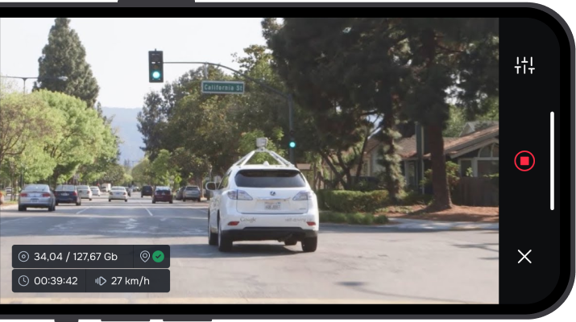

Low-cost solution for continuous maintenance and real-time updates for HD maps at scale using crowdsourcing.
Old vs newly-constructed bridge and guardrails
Our platform can create digital twins for AV simulations.
This exercise helps ensure that AV will behave predictably in even the most challenging scenarios.

Driver behavior monitoring is a vital part of efficient fleet management. Fleet-tracking dashboard cameras can help improve driving safety significantly
Our platform's AI monitors driver behavior and driving quality from both dashcam video and previously collected HD mapping data
Insurers can accurately and competitively price consumers, better predict risks, improve loss ratio, and motivate behavior change
Schedule a demo with Roadly to learn how our advanced computer vision technology streamlines the data collection process.
Schedule a demo Get free Trial
Get free Trial